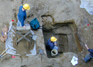
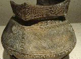

The Consulting Archaeology Program (CAP) provides another opportunity for students to gain experience in hands-on archaeology and employment opportunities. CAP's primary function is to assist state and federal agencies, as well as private developers in their environmental review process, a requirement for any federally-funded and licensed projects. The role of CAP is to identify, evaluate and develop management plans for prehistoric and historic sites that may be affected by various types of construction such as highways, hydroelectric facilities and housing developments.
Learn more about CAP: Dr. John Crock, Director, University of Vermont, Consulting Archaeology Program, Delehanty Hall, Trinity Campus, 656-4310 or visit the CAP website.
With the help of a faculty advisor, the Anthropology Club is a student-run organization providing a diversity of anthropological activities such as:
Join us! Visit us at ~anthclub or e-mail anthclub@uvm.edu.
This permanent anthropological exhibit is dedicated to a former faculty member whose scholarly expertise celebrated the art of the original Americans. The exhibition explores the material cultures and artistic traditions of indigenous peoples of North America through art and artifacts from the Museum's collections. Drawing upon the unique breadth and strengths of the Fleming's collections, the exhibition features outstanding examples of Navajo textiles, Plains quillwork and beadwork, carvings from the northwest coast, pottery from the southwest, baskets from California and New England, and lithics from Vermont, among others. Highlights include: